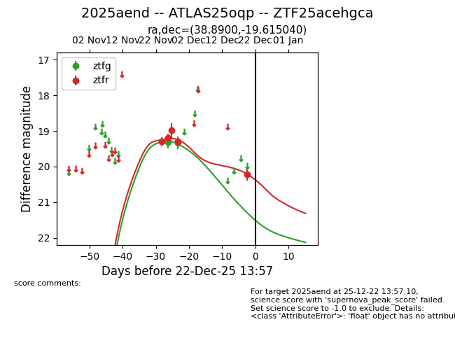
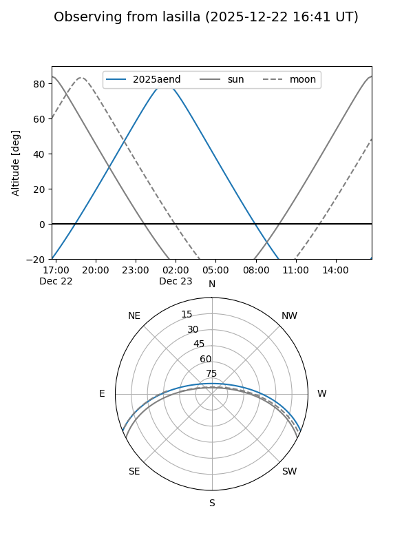
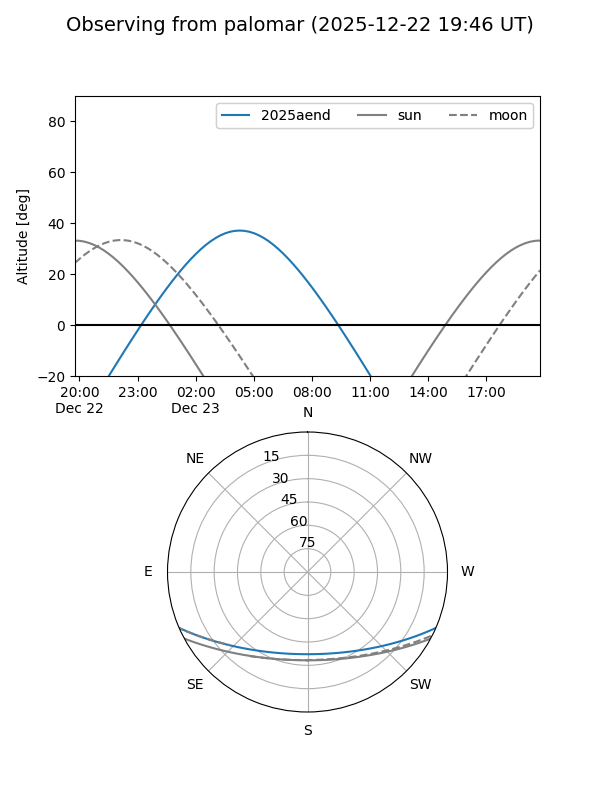
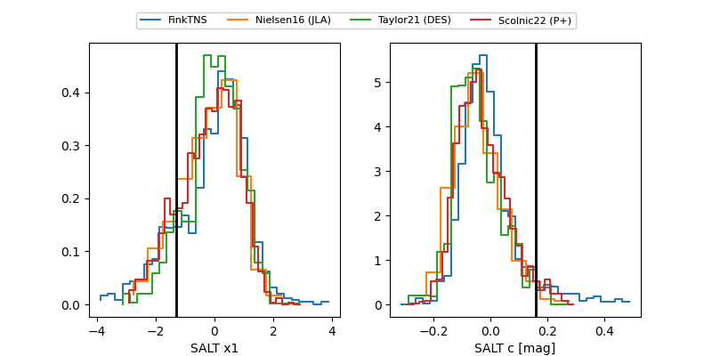

2025aend
Target 2025aend at 2025-12-20 04:29
Aliases and brokers:
FINK: fink-portal.org/ZTF25acehgca
Lasair: lasair-ztf.lsst.ac.uk/objects/ZTF25acehgca
ALeRCE: alerce.online/object/ZTF25acehgca
TNS: wis-tns.org/object/2025aend
YSE: ziggy.ucolick.org/yse/transient_detail/2025aend
alt names
ZTF25acehgca (ztf,fink_ztf)
2025aend (tns,yse)
ATLAS25oqp (atlas)
Coordinates:
equatorial (ra, dec) = 38.8900,-19.61504
equatorial (HMS+DMS) = 02:35:33.59,-19:36:54.14
galactic (l, b) = (201.0225,-65.00897)
Flags:
Photometry:
last ztfg=19.33, ztfr=20.21
2 ztfg, 5 ztfr detections
Lightcurve

Visibility


Additional plots
